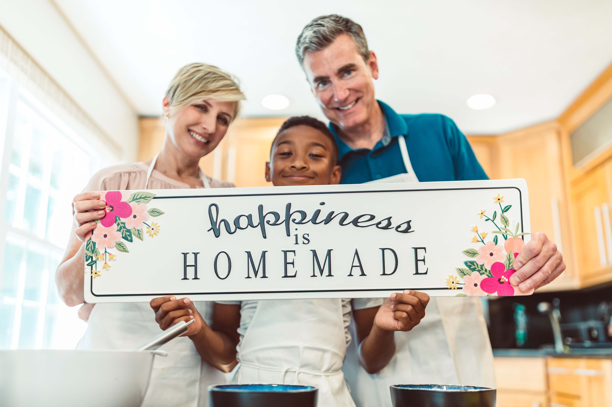
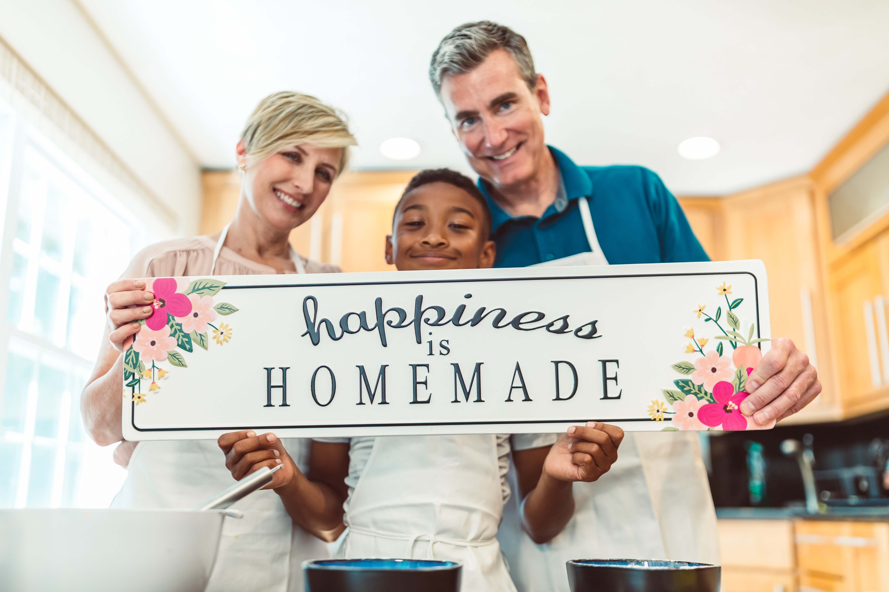

Disadvantages of Social Media
1) Affects social - emotional connection :
Social media have a lots of avdantages but rather that there are some disavantages also . Its affects the emotional connections between the loved one's. In early time , we reserve the time for our family or our near people. specially plans for thier special days and meet them enjoy with them . But now we send some messages some wishes from our mobiles so we lost that quality time . Our social emotion we lost . A person's emotion and feelings cannot be felt throgh just a text message .Sp ,threre is a lack of connection between people because of social media.
2) Decrease quick - witted skill :
In early time when we met our friends , family then that tme we enjoy alots with each other. We are presently friquently answers at talktime . but with this social media lack of quick- witted skills . people got messages then think over it and then reply for the messages . So , its affects on mental health fo people. we missing love , true friendship , enjoyment , fun time , peace , and much more.
3) Causing distress to someone's feeling :
You can use it for a noble deed instead of hurting someone . People shares their photos , thoughts , on social media then other appriciate that posts . It's feelings are good . But when that posts are trolls by others unknown persons also send bad replies on post . Then they feel very bad . On our birthdays , when people don't share our pictures on There social media then we feel so bad . that's why there is causing distress to someone's feelings . The unnecessary trolls . feedbacks , comment on another person's life makes me feel very disappointed.
4) Present physically not mentally :
In early time when we met each other we lacks our belongings and only enjoy the chating , gossiping , etc . But now when we meet each other then also we busy in our phones . It is one of the major reasons behind health issues like depression , stress , and anxiety because we are somewhere missing those real - time friends and interactions with them , which we earlier used to have .
5) Lacking understanding and thoughtfullness :
Due to social media over use we lack understanding between our family and friends . Social media has replaced a real - time face to face conversations . We don't understanding others feelings . Sometimes we changes our post according to our feelings like if we are happy the we post happy thaughts on social media and when we are sad we post like that. But nobody can recognize this . we lost our thoughtfullness by excess use of Social media.
6) Lack of family quality time :
Due to Social media we really lack our family time and quality time . Lots of the time we spends our holiday in our bed. We don't ever talk with our neighbour also . In our grandfathers times social media even other media's also rarely usedthat time they spends times with families and neighbours . That time stress and depression are not big problems for people . Now a days we lack this family time.
7) Cyberbullying :
Cyberbullying is very enlarged recently . Some fraud people create on account on social media and victims the childrens and teenagers . Cyberbullying has resulted in many suicides and depressions issues etc . People create accounts on social mediaand spread fake news , fake rumors . this is the negetive effects of the social media on teenagres. Like cyberbullying , cyberstalking also a negetive effects of social media . Fake users stalks the other and missuse their information . And sometimes missuse of there feelings.
8) Hacking :
In one side , social media is very usefull for the shopping , donating funds , online search . Other side social media is use by the theaft also . With the increasng use of social media Hacking also increases. Hackers hacks the private accountsand stole private information then missing this. Some times Hackers hacks banks accounts details and stoles the money online. sometimes they missuse some girls private photo gallery . They hack our countries security system also . I suggest everyone keep their privacy locked to avoid such circumstances in life .
9) Distracted mind :
Every one is busy with social media all over day . At sleeping time also we checked aour phones , without using it we did not sleep . this is very important part of our life . If we went somewhere for holiday also then we dont admire the beauty with our eyes . we were constantly busy on taking images and busy in updating it on social media. Everyone is busy in the race to attain the maximum number of followers on social media.
10) Facilitates Laziness :
People have become lazy due to technology usage . This is one of the big disadvantage of Social media . People are use phones all the day . From kids to old agers all are use upto 15 -16 hours in day . All the time we seat on out couch with our phones. In family functions also we are busy with phones . Due to this laziness has to lead to various health issues like fatigue , blood pressure , obesity , stress , depressions , etc .
11) Adiction :
Social media adiction is one major issue now a days . When somebody suffers from mental issues majorly the reasons is addiction . Teenagers are the widely adicted they lost there family time due to this adiction . Using something is not bad because using this we are get updates . But excess using is bad this is cause adiction. Due to this mental health is imbalanced.


 
